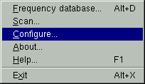
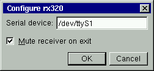

Setup
Install your RX320 receiver following the instructions in Ten-Tec's manual
and connect it to a free serial port in your computer. Start the rx320
control application (ignore any serial port error messages that may appear)
and when the main window appears right click on the main tuning knob to
bring up the application menu:

Select the configure option from the menu, then type the serial port name the
receiver is connected to in the setup dialog (consult your Unix docs for the
correct name):

Click OK. If you get any error messages at this point, then either you
entered the wrong name or you do not have the correct permissions to
access the serial port. If you have root access, you should be able to
correct the permissions problem by setting the serial port modes
accordingly, for example:
chmod 0666 /dev/ttyS1
Otherwise contact your system administrator.
Turn on the receiver. You should see a Power ON
message flash for a second in the
main display. If you don't, check the receiver power supply and serial port
connections. You can tell that the receiver is getting power if you hear a
"pop" in the speaker or headphones when you turn on the receiver.
Try now tuning to a known station, and check that the volume, mode and filters
work properly. If you get an erratic behaviour, check that the serial
port is not being accessed simultaneously by some other application.